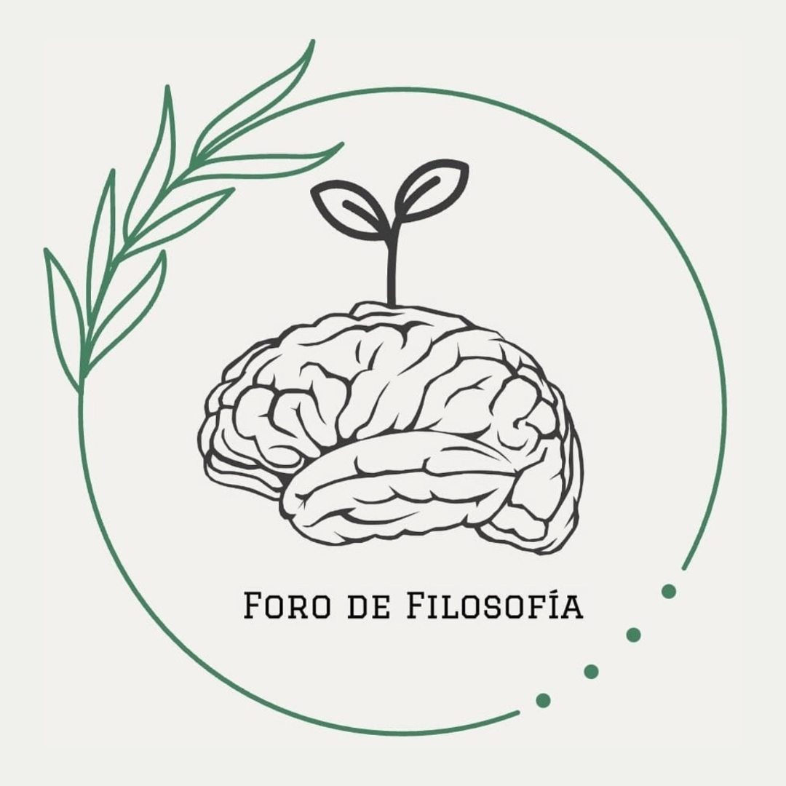

<!-- Toda la carpeta de details incluyendo sus archivos fueron creados usando el comando "ionic g page details" en la terminal y despues se modificaron -->

<ion-header [translucent]="true">
  <ion-toolbar> <!-- Barra de navegacion -->
    <ion-buttons slot="start"> <!-- Boton de retroceso (hacia pagina principal)-->
      <ion-back-button>Atras</ion-back-button>
    </ion-buttons> <!-- Fin de boton de retroceso -->
    <ion-title> <!-- Titulo de la pagina -->
      <h4>
        Foro de Filosofía '24
      </h4>
    </ion-title> <!-- Fin de titulo de la pagina -->
  </ion-toolbar>  <!-- Fin de barra de navegacion -->
   <!-- Logo de la aplicacion como fondo -->
</ion-header>

<ion-content [fullscreen]="true">
  <ion-grid> <!-- Grid para acomodar los elementos -->
    <ion-row>
      <ion-col>
        <h4>{{evento.Evento}}</h4> <!-- Titulo del evento -->
        <ion-badge>{{evento.Hora.Inicio}}-{{evento.Hora.Fin}}</ion-badge> <!-- Horario del evento -->
        <p>{{evento.Descripcion}}</p> <!-- Descripcion del evento -->
        <h6>Ubicacion:</h6> <!-- Titulo que dice 'ubicacion' -->
        <ion-badge *ngFor="let ubi of evento.Ubicacion">{{ubi}}</ion-badge> <!-- Ubicacion(es) del evento -->
         <!-- Imagenes del croquis -->
        <div *ngIf="evento.Evento == 'Cierre'" style="justify-content: center; align-items: center; width: 100%; display: flex; margin-top: 10vh; margin-bottom: 5vh;"> <!-- Boton para solicitar reconocimiento (Solo aparece en pagina de cierre) -->
          <a href="https://forms.gle/QwUTdWoN67vbEEg18"><ion-button style="--background: #527D65">Solicitar reconocimiento</ion-button></a>
        </div>
      </ion-col>
    </ion-row>
  </ion-grid>
</ion-content>